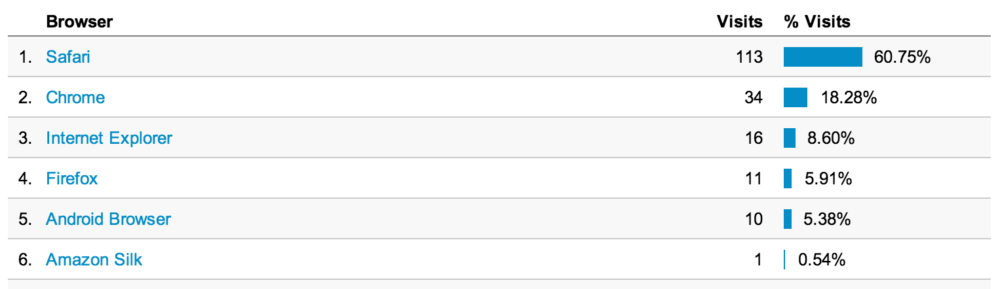

"10.11 percent of Website hits/pageviews come from a handheld mobile device"
"Many mobile Web users are mobile-only"
"Desktop first"
Responsive design
"Content is king"
Variety of devices
Graceful degradation
Progressive enhancement
Feature detection (Modernizr)
Costs: bandwidth, requests, processing
Pre-compile (eg. templates)
Start with simpler code
/* Desktop first */
@media screen and (max-width: 400px) {}
/* Mobile first */
@media screen and (min-width: 600px) {}
Load large images in media queries
Emulators, virtual machines, actual devices
weinre - Web Inspector for (WebKit) mobile
Client-side errors (Qbaka)